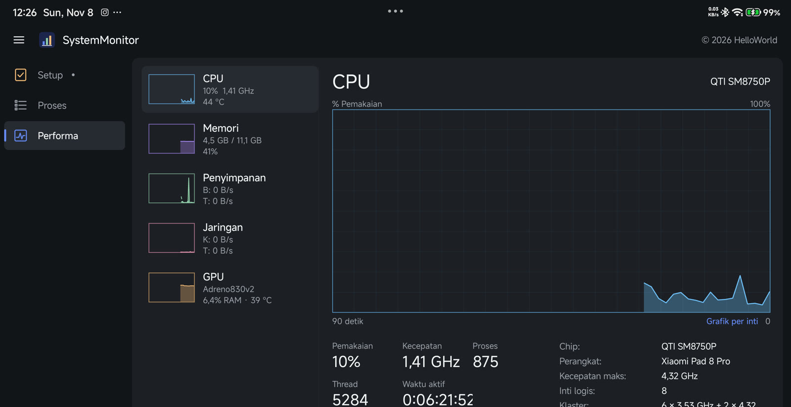
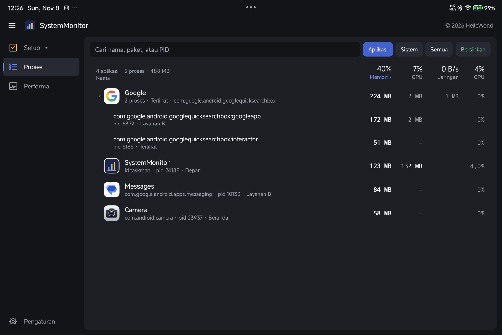
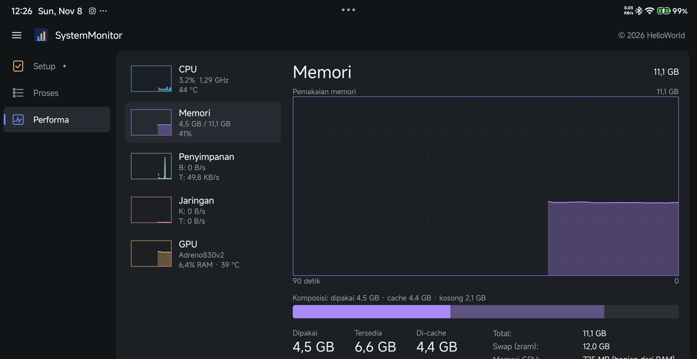
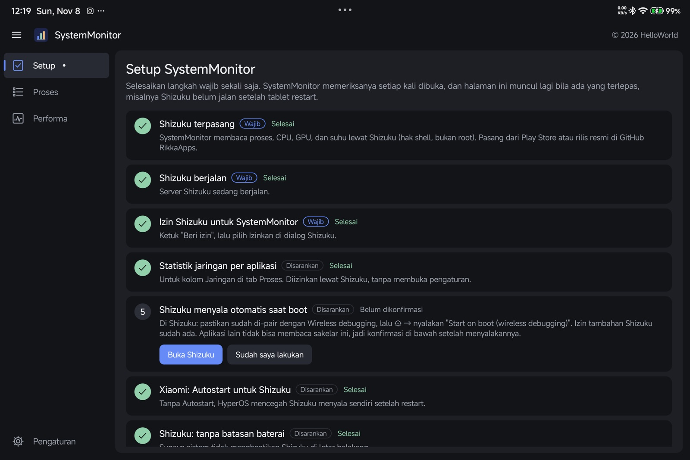
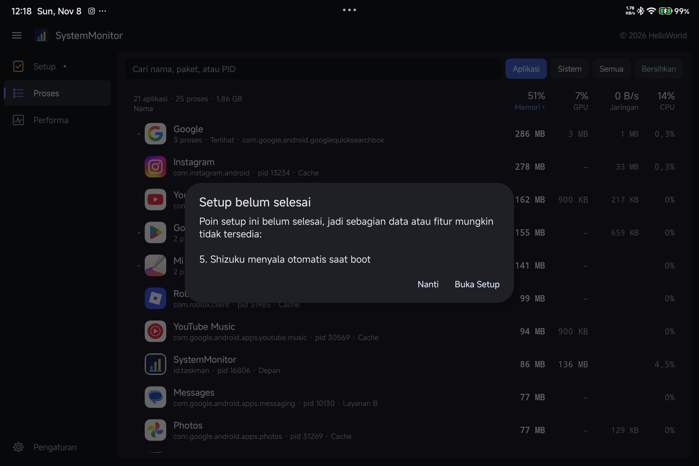
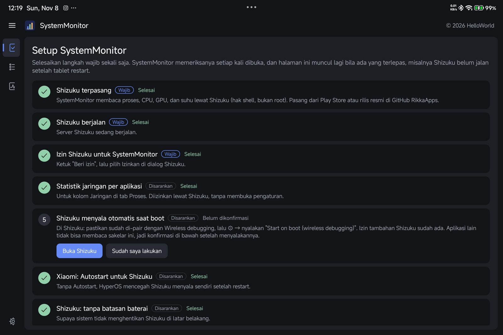
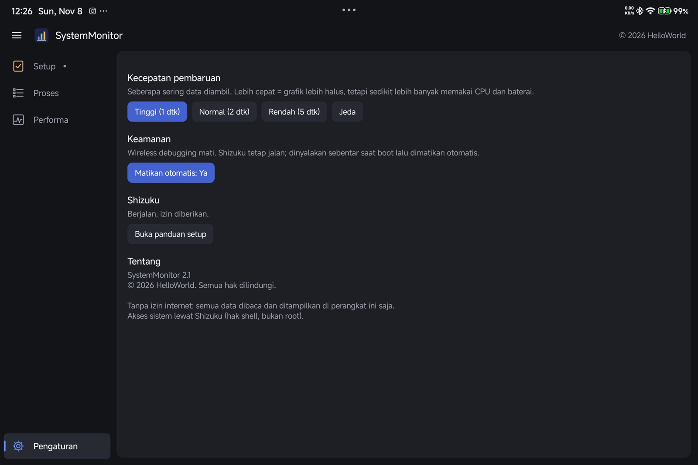

Task Manager ala Windows, untuk tablet dan HP Android
A Windows-style Task Manager for Android tablets and phones
Lihat apa yang memakai memori, CPU, GPU, dan jaringan, per aplikasi. Tab Performa dengan grafik langsung, tombol Bersihkan untuk aplikasi cache, dan panduan setup yang memeriksa semuanya. Tanpa root, tanpa internet.
See what uses memory, CPU, GPU and network, per app. A Performance tab with live graphs, a Clean button for cached apps, and a setup guide that checks everything. No root, no internet.
Pasang di HP atau tablet?Pindai kode ini dengan kamera untuk membuka halaman ini di perangkat Android.
Installing on a phone or tablet?Scan this code with the camera to open this page on your Android device.

Tangkapan layar
Screenshots












Fitur
Features
Proses per aplikasi
Processes per app
Memori (PSS), memori GPU, jaringan, dan CPU tiap aplikasi; aplikasi dengan banyak proses digabung dan bisa dibuka. Cari nama, paket, atau PID.
Memory (PSS), GPU memory, network and CPU per app; multi-process apps are grouped and expandable. Search by name, package or PID.
Performa dengan grafik
Performance graphs
CPU (juga per inti), Memori, Penyimpanan, Jaringan, dan GPU, masing-masing dengan grafik riwayat dan statistik: kecepatan, proses, thread, waktu aktif, klaster inti, suhu.
CPU (per core too), Memory, Storage, Network and GPU, each with a history graph and stats: speed, processes, threads, uptime, core clusters, temperature.
Bersihkan & hentikan
Clean & end tasks
Satu ketuk menghentikan semua aplikasi cache tanpa menyentuh yang sedang dipakai. Hentikan paksa aplikasi atau proses dari dialog detail.
One tap stops every cached app without touching what you are using. Force-stop an app or process from its detail dialog.
Tanpa root, tanpa internet
No root, no internet
Akses sistem lewat Shizuku (hak shell). Aplikasi tidak punya izin internet; semua data tetap di perangkat.
System access through Shizuku (shell rights). The app has no internet permission; all data stays on the device.
Wireless debugging aman
Safer Wireless debugging
Wireless debugging hanya menyala sebentar saat boot untuk memulai Shizuku, lalu dimatikan otomatis supaya port adb tidak terbuka di Wi-Fi.
Wireless debugging only runs briefly at boot to start Shizuku, then is switched off so the adb port isn't open on Wi-Fi.
Hemat memori
Light on memory
Proses layanan shell dilepas saat aplikasi tidak terlihat, ikon disimpan kecil, dan cache dilepas saat Android meminta memori.
The shell service process is released while the app isn't visible, icons are stored small, and caches are dropped when Android asks for memory.
Pengaturan awal
First-time setup
Tab Setup terbuka sendiri saat ada langkah wajib yang belum selesai dan memeriksa setiap langkah. Langkah yang disarankan tidak menghalangi pemakaian.
The Setup tab opens by itself while a required step is missing and checks every step. Recommended steps never block you.
- Pasang APKInstall the APK Unduh di perangkat dan izinkan pemasangan dari browser. Kalau Play Protect bertanya, pilih "Install anyway". Download on the device and allow installs from the browser. If Play Protect asks, choose "Install anyway".
- Pasang ShizukuInstall Shizukuwajibrequired Dari Play Store atau rilis resmi RikkaApps. From the Play Store or the official RikkaApps release.
- Jalankan ShizukuStart Shizukuwajibrequired Developer options → nyalakan Wireless debugging. Di Shizuku: "Pair" sekali, lalu "Start". Developer options → turn on Wireless debugging. In Shizuku: "Pair" once, then "Start".
- Izin Shizuku untuk SystemMonitorShizuku permission for SystemMonitorwajibrequired Ketuk "Beri izin" di Setup, lalu Izinkan di dialog Shizuku. Tap "Grant" in Setup, then Allow in Shizuku's dialog.
- Statistik jaringan per aplikasiPer-app network statsdisarankanrecommended Satu ketuk di Setup, diizinkan lewat Shizuku. One tap in Setup, granted through Shizuku.
- Shizuku menyala otomatis saat bootShizuku starts at bootdisarankanrecommended Di Shizuku: ⚙ → "Start on boot (wireless debugging)". Bila Shizuku menampilkan peringatan untuk perangkat root, tutup saja: mode Wireless debugging tidak butuh root. In Shizuku: ⚙ → "Start on boot (wireless debugging)". If Shizuku shows a warning for rooted devices, dismiss it: the Wireless debugging mode needs no root.
- Xiaomi: Autostart & baterai ShizukuXiaomi: Autostart & battery for Shizukudisarankanrecommended Satu ketuk masing-masing di Setup, supaya HyperOS tidak menahan Shizuku setelah restart. One tap each in Setup, so HyperOS doesn't hold Shizuku back after a restart.
Dukung SystemMonitor
Support SystemMonitor
SystemMonitor gratis dan tanpa iklan.
Kalau aplikasi ini berguna, kamu bisa traktir kopi lewat Saweria untuk membantu pengembangan berikutnya.
SystemMonitor is free and has no ads.
If it helps you, you can buy me a coffee on Saweria to support what comes next.
Yang baru
What's new
FAQ
UmumGeneral· 4
Apa itu SystemMonitor dan apa yang dibutuhkan?What is SystemMonitor and what do I need?
Pemantau sistem dan task manager untuk Android dengan tampilan seperti Task Manager Windows. Yang dibutuhkan: Android 10+ dan aplikasi Shizuku. Tanpa root.
A system monitor and task manager for Android, laid out like the Windows Task Manager. You need Android 10+ and the Shizuku app. No root.
Kenapa butuh Shizuku?Why does it need Shizuku?
Sejak Android 7, aplikasi biasa tidak boleh melihat proses aplikasi lain. Shizuku memberi hak shell (sama dengan adb dari komputer) kepada aplikasi yang kamu izinkan, sehingga SystemMonitor bisa membaca daftar proses, memori, GPU, dan suhu.
Since Android 7 regular apps can't see other apps' processes. Shizuku gives shell rights (the same as adb from a computer) to apps you approve, so SystemMonitor can read processes, memory, GPU and temperatures.
Data apa yang dikumpulkan?What data is collected?
Tidak ada. SystemMonitor tidak punya izin internet dan tidak punya server; semua angka dibaca dan ditampilkan di perangkat saja.
None. SystemMonitor has no internet permission and no server; every number is read and shown on the device only.
Kenapa tidak ada di Play Store?Why isn't it on the Play Store?
Aplikasi ini bergantung pada Shizuku dan perintah shell, jadi dibagikan langsung di sini. Setiap rilis ditandatangani dengan kunci yang sama dan disertai SHA-256.
It depends on Shizuku and shell commands, so it is distributed here. Every release is signed with the same key and comes with its SHA-256.
PenggunaanUsing it· 4
Apa yang dihentikan tombol Bersihkan?What does Clean stop?
Hanya aplikasi berstatus Cache (disimpan di memori tapi tidak tampil). Aplikasi yang sedang dipakai, jendela mengambang, musik, layanan, dan proses sistem tidak disentuh. Aplikasi yang dihentikan mulai dari awal saat dibuka lagi.
Only apps in the Cached state (kept in memory but not shown). Apps in use, floating windows, music, services and system processes are left alone. Stopped apps start fresh when reopened.
Kenapa memori selalu terlihat "terpakai" banyak?Why does memory always look "used"?
Android sengaja menyimpan aplikasi di RAM supaya dibuka lagi lebih cepat. RAM kosong tidak membuat perangkat lebih cepat; yang penting angka Tersedia. Rendah setelah restart itu wajar dan akan naik lagi.
Android keeps apps in RAM on purpose so they reopen faster. Empty RAM doesn't make the device faster; what matters is Available. Low usage after a restart is normal and will rise again.
Kenapa tidak ada persen beban GPU seperti di Windows?Why no GPU load % like on Windows?
Banyak ROM (mis. HyperOS) memblokir angka beban dan clock GPU untuk hak shell; hanya root yang bisa membacanya. GPU ponsel juga tidak punya VRAM sendiri, jadi yang ditampilkan adalah memori GPU sebagai porsi RAM, plus suhu GPU.
Many ROMs (e.g. HyperOS) block GPU load and clock for shell rights; only root can read them. Phone GPUs also have no dedicated VRAM, so you see GPU memory as a share of RAM, plus GPU temperature.
Kenapa jaringan per aplikasi berupa total, bukan KB/s?Why is per-app network a total, not KB/s?
Android hanya memperbarui angka per aplikasi beberapa menit sekali untuk aplikasi biasa, jadi lajunya tidak bisa dihitung langsung. Laju total semua aplikasi tetap tampil langsung.
Android refreshes per-app counters only every few minutes for regular apps, so a live rate can't be computed. The total rate for all apps is still live.
MasalahTroubleshooting· 3
Daftar proses kosong / Setup terus munculEmpty process list / Setup keeps opening
Shizuku belum berjalan atau izinnya dicabut. Buka Setup: langkah yang merah menunjukkan apa yang perlu dilakukan, dengan tombol langsung ke Shizuku.
Shizuku isn't running or its permission was revoked. Open Setup: the unfinished step shows what to do, with a button straight to Shizuku.
Shizuku tidak menyala sendiri setelah restartShizuku doesn't start after a restart
Periksa: Shizuku sudah di-pair dengan Wireless debugging, "Start on boot" menyala, perangkat tersambung ke Wi-Fi saat boot, dan (Xiaomi) Autostart serta baterai Shizuku diizinkan. "Forget all devices" di Wireless debugging menghapus pairing; ulangi pairing di Shizuku.
Check that Shizuku is paired with Wireless debugging, "Start on boot" is on, the device is on Wi-Fi at boot, and (Xiaomi) Autostart and battery are allowed for Shizuku. "Forget all devices" in Wireless debugging removes the pairing; pair again in Shizuku.
Update dari versi lamaUpdating from an older version
Pasang APK baru di atas yang lama; pengaturan dan izin Shizuku tetap.
Install the new APK over the old one; settings and the Shizuku permission are kept.
Saran, masukan, atau laporan masalah?
Kirim email — sertakan versi SystemMonitor, tipe perangkat, dan apa yang terjadi.
Suggestions, feedback or a bug?
Send an email — include the SystemMonitor version, your device and what happened.